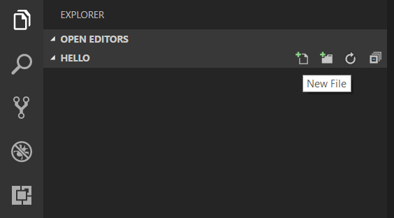
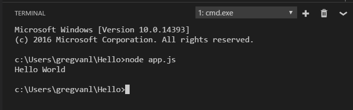
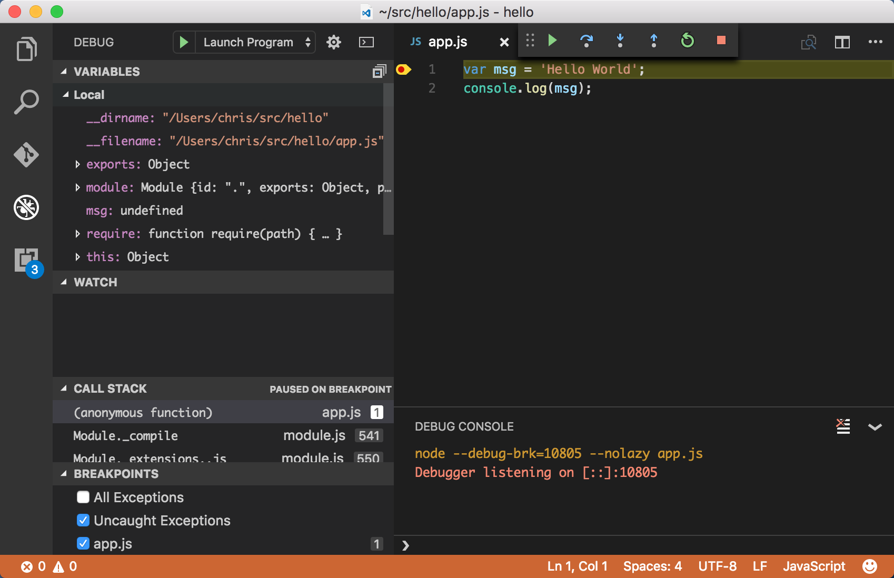
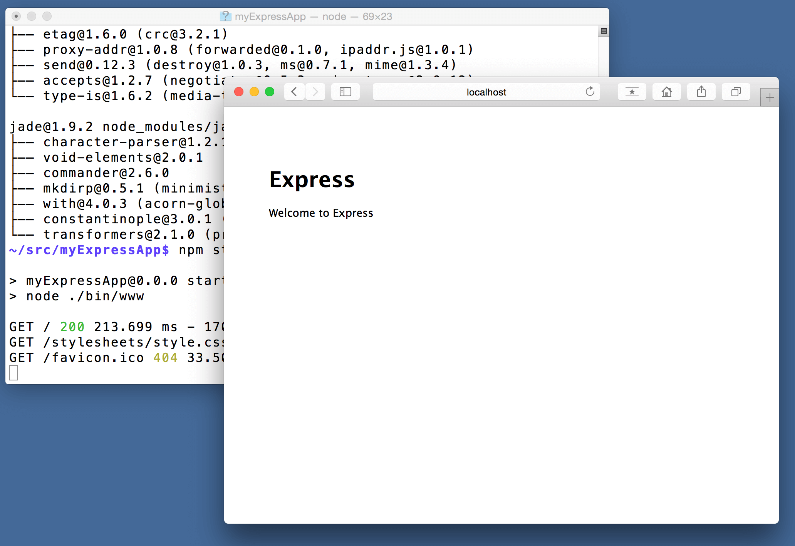
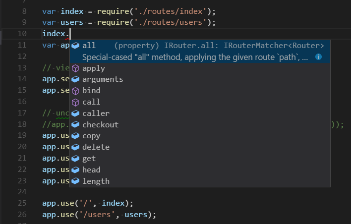
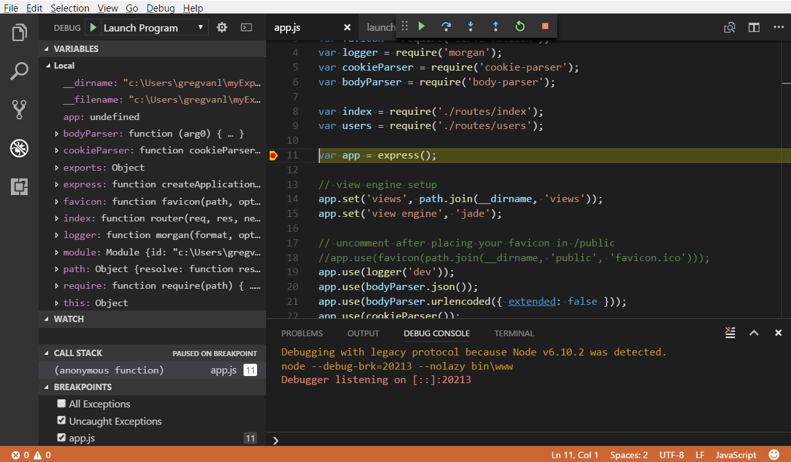

Node.js tutorial in Visual Studio Code
Node.js is a platform for building fast and scalable server applications using JavaScript. Node.js is the runtime and npm is the Package Manager for Node.js modules.
Visual Studio Code has support for the JavaScript and TypeScript languages out-of-the-box as well as Node.js debugging. However, to run a Node.js application, you will need to install the Node.js runtime on your machine.
To get started in this walkthrough, install Node.js for your platform. The Node Package Manager is included in the Node.js distribution. You'll need to open a new terminal (command prompt) for the node and npm command-line tools to be on your PATH.
To test that you have Node.js installed correctly on your computer, open a new terminal and type node --version and you should see the current Node.js version installed.
Linux: There are specific Node.js packages available for the various flavors of Linux. See Installing Node.js via package manager to find the Node.js package and installation instructions tailored to your version of Linux.
Windows Subsystem for Linux: If you are on Windows, WSL is a great way to do Node.js development. You can run Linux distributions on Windows and install Node.js into the Linux environment. When coupled with the Remote - WSL extension, you get full VS Code editing and debugging support while running in the context of WSL. To learn more, go to Developing in WSL or try the Working in WSL tutorial.
Hello World
Let's get started by creating the simplest Node.js application, "Hello World".
Create an empty folder called "hello", navigate into and open VS Code:
mkdir hello
cd hello
code .
Tip: You can open files or folders directly from the command line. The period '.' refers to the current folder, therefore VS Code will start and open the
Hellofolder.
From the File Explorer toolbar, press the New File button:

and name the file app.js:

By using the .js file extension, VS Code interprets this file as JavaScript and will evaluate the contents with the JavaScript language service. Refer to the VS Code JavaScript language topic to learn more about JavaScript support.
Create a simple string variable in app.js and send the contents of the string to the console:
var msg = 'Hello World';
console.log(msg);
Note that when you typed console. IntelliSense on the console object was automatically presented to you.

Also notice that VS Code knows that msg is a string based on the initialization to 'Hello World'. If you type msg. you'll see IntelliSense showing all of the string functions available on msg.

After experimenting with IntelliSense, revert any extra changes from the source code example above and save the file (kb(workbench.action.files.save)).
Running Hello World
It's simple to run app.js with Node.js. From a terminal, just type:
node app.js
You should see "Hello World" output to the terminal and then Node.js returns.
Integrated Terminal
VS Code has an integrated terminal which you can use to run shell commands. You can run Node.js directly from there and avoid switching out of VS Code while running command-line tools.
View > Terminal (kb(workbench.action.terminal.toggleTerminal) with the backtick character) will open the integrated terminal and you can run node app.js there:

For this walkthrough, you can use either an external terminal or the VS Code integrated terminal for running the command-line tools.
Debugging Hello World
As mentioned in the introduction, VS Code ships with a debugger for Node.js applications. Let's try debugging our simple Hello World application.
To set a breakpoint in app.js, put the editor cursor on the first line and press kb(editor.debug.action.toggleBreakpoint) or click in the editor left gutter next to the line numbers. A red circle will appear in the gutter.

To start debugging, select the Run View in the Activity Bar:

You can now click Debug toolbar green arrow or press kb(workbench.action.debug.start) to launch and debug "Hello World". Your breakpoint will be hit and you can view and step through the simple application. Notice that VS Code displays a different colored Status Bar to indicate it is in Debug mode and the DEBUG CONSOLE is displayed.

Now that you've seen VS Code in action with "Hello World", the next section shows using VS Code with a full-stack Node.js web app.
Note: We're done with the "Hello World" example so navigate out of that folder before you create an Express app. You can delete the "Hello" folder if you want as it is not required for the rest of the walkthrough.
An Express application
Express is a very popular application framework for building and running Node.js applications. You can scaffold (create) a new Express application using the Express Generator tool. The Express Generator is shipped as an npm module and installed by using the npm command-line tool npm.
Tip: To test that you've got
npmcorrectly installed on your computer, typenpm --helpfrom a terminal and you should see the usage documentation.
Install the Express Generator by running the following from a terminal:
npm install -g express-generator
The -g switch installs the Express Generator globally on your machine so you can run it from anywhere.
We can now scaffold a new Express application called myExpressApp by running:
express myExpressApp --view pug
This creates a new folder called myExpressApp with the contents of your application. The --view pug parameters tell the generator to use the pug template engine.
To install all of the application's dependencies (again shipped as npm modules), go to the new folder and execute npm install:
cd myExpressApp
npm install
At this point, we should test that our application runs. The generated Express application has a package.json file which includes a start script to run node ./bin/www. This will start the Node.js application running.
From a terminal in the Express application folder, run:
npm start
The Node.js web server will start and you can browse to http://localhost:3000 to see the running application.

Great code editing
Close the browser and from a terminal in the myExpressApp folder, stop the Node.js server by pressing kbstyle(CTRL+C).
Now launch VS Code:
code .
Note: If you've been using the VS Code integrated terminal to install the Express generator and scaffold the app, you can open the
myExpressAppfolder from your running VS Code instance with the File > Open Folder command.
The Node.js and Express documentation does a great job explaining how to build rich applications using the platform and framework. Visual Studio Code will make you more productive in developing these types of applications by providing great code editing and navigation experiences.
Open the file app.js and hover over the Node.js global object __dirname. Notice how VS Code understands that __dirname is a string. Even more interesting, you can get full IntelliSense against the Node.js framework. For example, you can require http and get full IntelliSense against the http class as you type in Visual Studio Code.

VS Code uses TypeScript type declaration (typings) files (for example node.d.ts) to provide metadata to VS Code about the JavaScript based frameworks you are consuming in your application. Type declaration files are written in TypeScript so they can express the data types of parameters and functions, allowing VS Code to provide a rich IntelliSense experience. Thanks to a feature called Automatic Type Acquisition, you do not have to worry about downloading these type declaration files, VS Code will install them automatically for you.
You can also write code that references modules in other files. For example, in app.js we require the ./routes/index module, which exports an Express.Router class. If you bring up IntelliSense on index, you can see the shape of the Router class.

Debug your Express app
You will need to create a debugger configuration file launch.json for your Express application. Click on the Run icon in the Activity Bar and then the Configure gear icon at the top of the Run view to create a default launch.json file. Select the Node.js environment by ensuring that the type property in configurations is set to "node". When the file is first created, VS Code will look in package.json for a start script and will use that value as the program (which in this case is "${workspaceFolder}\\bin\\www) for the Launch Program configuration.
{
"version": "0.2.0",
"configurations": [
{
"type": "node",
"request": "launch",
"name": "Launch Program",
"program": "${workspaceFolder}\\bin\\www"
}
]
}
Save the new file and make sure Launch Program is selected in the configuration dropdown at the top of the Run view. Open app.js and set a breakpoint near the top of the file where the Express app object is created by clicking in the gutter to the left of the line number. Press kb(workbench.action.debug.start) to start debugging the application. VS Code will start the server in a new terminal and hit the breakpoint we set. From there you can inspect variables, create watches, and step through your code.

Deploy your application
If you'd like to learn how to deploy your web application, check out the Deploying Applications to Azure tutorials where we show how to run your website in Azure.
Next steps
There is much more to explore with Visual Studio Code, please try the following topics:
- Settings - Learn how to customize VS Code for how you like to work.
- Debugging - This is where VS Code really shines.
- Video: Getting started with Node.js debugging - Learn how to attach to a running Node.js process.
- Node.js debugging - Learn more about VS Code's built-in Node.js debugging.
- Debugging recipes - Examples for scenarios like client-side and container debugging.
- Tasks - Running tasks with Gulp, Grunt and Jake. Showing Errors and Warnings.